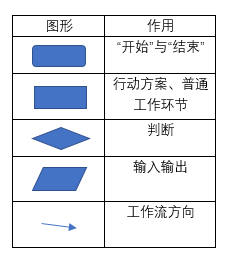
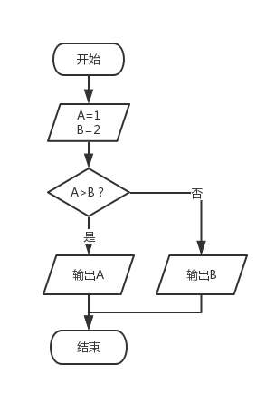
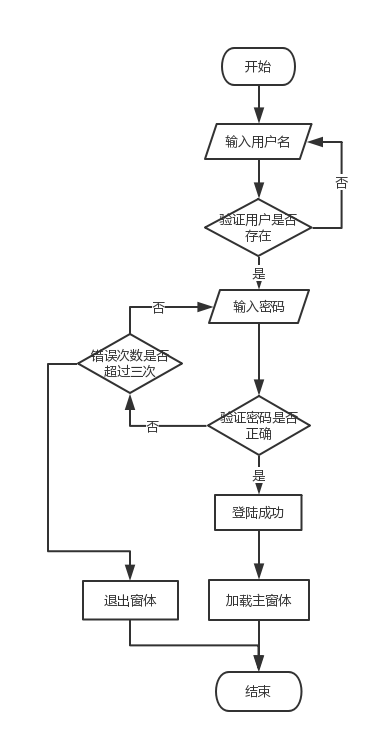
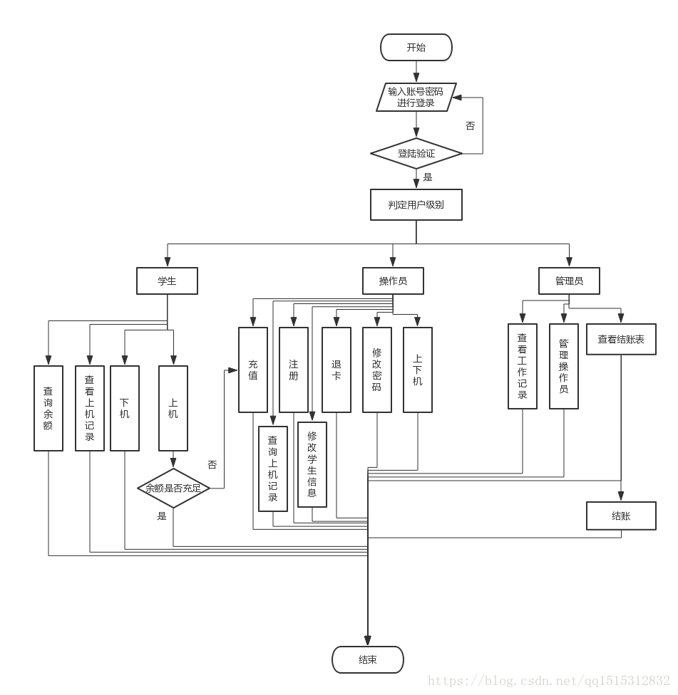

制作流程的工具：
Processon
流程图：
流程图一般由由圆角矩形、矩形、菱形、平行四边形、箭头组成。
作用：
流程图一般都是用圆角矩形来表示“开始”与“结束”，用矩形表示行动方案、普通工作环节，菱形表示判断，平行四边形表示输入输出，箭头表示工作流方向。

例子1:
如说我们要定义两个数a=1，b=2然后进行比较输出大的数，那么流程图如下

例子2:
这个流程图是简单描述在登录的时候判断账号和密码的流程图

例子3:
机房收费系统的流程图
